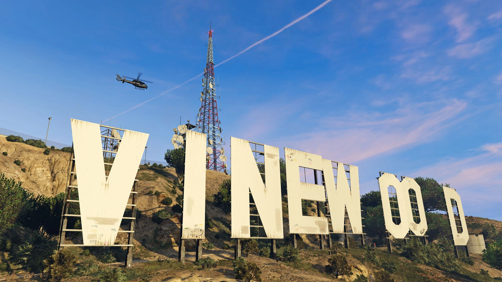

Bienvenue à
Los Santos
Los Santos est une ville fictive mais inspiré de Los Angeles venant du célebre jeu GTA 5. Elle a beau ne pas être réel elle reste tout de même vivante car il y a des piétons de la circulation et le joueur peut intéragir avec eux.

Voici par exemple une vidéo permettant de comparer les deux villes.